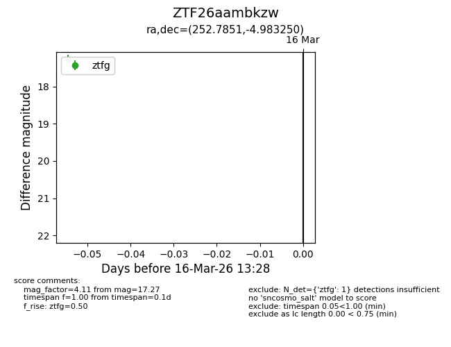
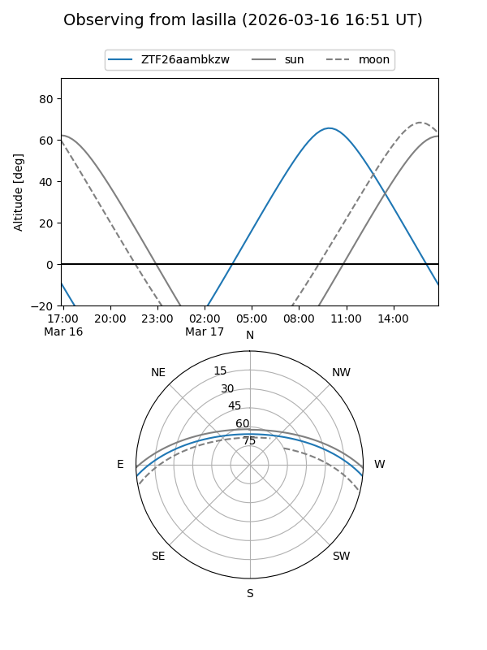
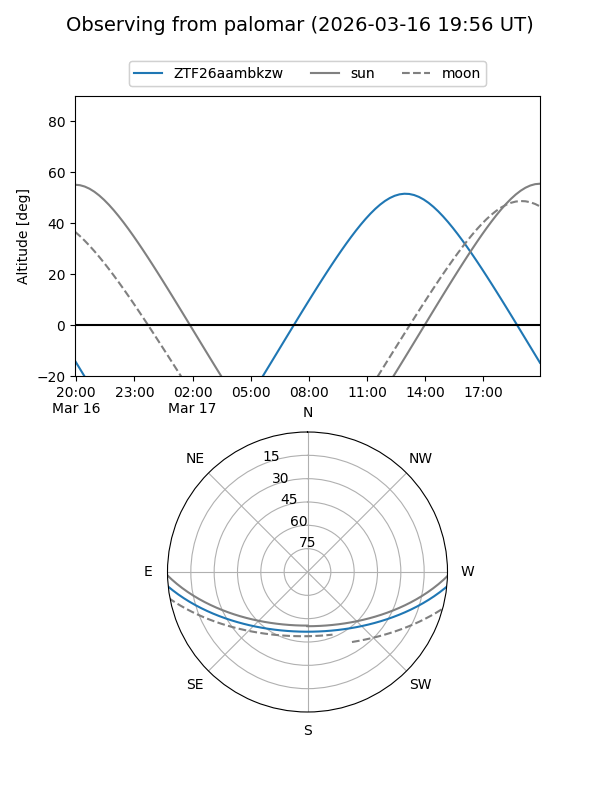

ZTF26aambkzw
Target ZTF26aambkzw at 2026-03-16 13:30
Aliases and brokers:
FINK: link
Lasair: link
ALeRCE: link
alt names
ZTF26aambkzw (ztf,fink_ztf)
Coordinates:
equatorial (ra, dec) = 252.7851,-4.98325
equatorial (HMS+DMS) = 16:51:08.42,-04:58:59.70
galactic (l, b) = (13.4519,+23.87232)
Flags:
Photometry:
last ztfg=17.27
1 ztfg detections
Lightcurve

Visibility


Additional plots